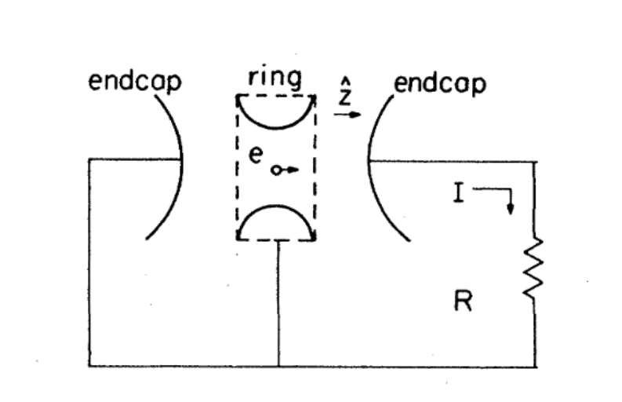

Penned Particles
A Penning trap is a device used to store charged particles using static magnetic and electric fields. In this problem we will investigate the motion of an ion inside the trap.
1.1
(a) The trap is a cylinder, parallel to the -axis, with the origin at the center. Inside, the electric potential is where is the characteristic dimension of the trap. In order to generate the quadrupole field inside, there are two sets of electrodes: two endcaps and the ring electrode, which are held at potential difference , and are solids of revolution. Refer to part (e) for a diagram. Let the minimum distance between endcaps be , and the smallest inside diameter of the ring be .
- Take a cross section parallel to the -axis through the origin. What are the equations of the cross section of the ring and endcap electrodes?
- Express in terms of and .
(b) The magnetic field is homogeneous inside the trap. Suppose we have a particle with charge and mass . Assume its speed is nonrelativistic, and neglect energy loss from radiation. Throughout the rest of the problem, assume is positive.
- The -axis motion is simple harmonic. Find the angular frequency .
- Write the differential equation for the motion in the -plane.
- Suppose . Solve the differential equation, and find the angular frequency of the motion . This is the cyclotron frequency.
Typically, . Assume this for the rest of the problem.
(c) The motion of the electron in the -plane consists of two separate uniform circular motions overlaid on top of each other. One is the cyclotron motion and the other is the magnetron motion. Find expressions for the angular frequencies of the cyclotron motion and the magnetron motion, in terms of and .
1.2
(d) We will now consider the effects of radiation. Typically, the magnetron motion has a much lower frequency than the cyclotron motion, so the decay of the magnetron motion is negligible. The power radiated by an accelerating particle is:
- The energy of the orbit decays as . Find .
- Now consider the radiation damping of the axial motion. The energy of the oscillation decays as . Find .
(e) For an electron at typical , is quite small, allowing for easy damping. However, is much larger, and for a proton, radiation damping is insignificant. In order to cool large particles, a circuit is used instead. We first consider axial damping.
The oscillations of the ion induce image charges in the electrode, which can be interpreted as a current . See the following circuit:

You may ignore the quadrupole potential in this part.
- There will be a potential difference of between the endcap and the ring (as well as the other endcap). This will produce an electric field proportional to inside the trap. Find , up to a constant factor , which depends on the geometry of the electrodes. Hint: if the endcaps are infinite flat planes, is equal to 1.
- Consider the power lost through the resistor. Use this to derive the force on the ion, . Write an expression for .
(f) To conclude, we will consider how to cool the magnetron motion (decrease its radius).
- Find the total energy of the magnetron motion. Assume .
The process works as follows. We shine photons of energy , which interact with the ion. Let the quantum numbers of the motion and the magnetron motion be and respectively. Then, the cooling transition is from , and the heating transition is from . Using quantum mechanics, we can derive that these happen at rates proportional to and respectively. The magnetron motion will be cooled until , at which point it will be in equilibrium, and there is no long term change in temperature.
- We will now derive the equilibrium energy of the magnetron motion. Assume that at equilibrium, the axial and magnetron motions are at temperatures and respectively. As we continue to shine photons, consider the change in entropy. Use this to derive in terms of , , and .
Fonte: Testo (PDF) — p.4 Topic: Electromagnetism, Electrostatics Metodi: Lorentz Force Analysis, Simple Harmonic Motion Analysis, Differential Equations, Conservation of Energy Competenze: Physical Reasoning, Mathematical Modeling Objects: Point Charge, Resistor, Photon
Particelle scritte
Una trappola di penning è un dispositivo utilizzato per memorizzare particelle cariche utilizzando campi magnetici statici e elettrici. In questo problema esamineremo il movimento di un ione all’interno della trappola.
1.1
**(a) ** La trappola è un cilindro, parallelo all’asse , con origine al centro. Dentro, il potenziale elettrico è dove è la dimensione caratteristica della trappola. Per generare il campo quadrupolo all’interno, ci sono due set di elettrodi: due cappucci finali e l’elettrodo anello, che sono tenuti alla differenza potenziale , e sono solidi di rivoluzione. Per un diagramma, si riferisce alla parte e). La distanza minima tra le cappe finali deve essere e il diametro interno più piccolo dell’anello deve essere .
- Prendere una sezione incrociata parallela all’asse attraverso l’origine. Quali sono le equazioni della sezione trasversale dell’anello e degli elettrodi endcap?
- Esprimere in termini di e .
**(b) ** Il campo magnetico è omogeneo all’interno della trappola. Supponiamo che abbiamo una particella con carica e massa . Supponiamo che la sua velocità sia non relativistica e trascuriamo la perdita di energia da radiazioni. Per il resto del problema, supponiamo che sia positivo.
- Il movimento dell’asse è armonico. Trova la frequenza angolare .
- Scrivere l’equazione differenziale del movimento nel piano .
- Supponiamo che . Risolvi l’equazione differenziale e trova la frequenza angolare del movimento . Questa è la frequenza del ciclotrone.
In genere . Supponiamo questo per il resto del problema.
**(c) ** Il movimento dell’elettrone nel piano consiste in due movimenti circolari uniformi separati sovrapposti l’uno all’altro. Uno è il movimento dei ciclotroni e l’altro è il movimento dei magnetroni. Trova espressioni per le frequenze angolari del movimento del ciclotrone e del movimento del magnetrone, in termini di e .
1.2
In questo caso, la Commissione ha deciso di adottare una decisione che non può essere adottata. In genere, il movimento dei magnetroni ha una frequenza molto inferiore al movimento dei ciclotroni, quindi il decadimento del movimento dei magnetroni è trascurabile. La potenza irradiata da una particella accelerante è:
- L’energia dell’orbita decade come . Trova .
- Ora consideriamo l’ammortizzazione delle radiazioni del movimento assiale. L’energia dell’oscillazione decade come . Trova .
**(e) ** Per un elettrone a tipico , è abbastanza piccolo, consentendo un facile ammortizzazione. Tuttavia, è molto più grande, e per un protone, l’ammortizzazione radiologica è insignificante. Per raffreddare le particelle di grandi dimensioni, viene utilizzato un circuito. Prendiamo in considerazione l’ammortizzazione assiale.
Le oscillazioni dell’ion inducono cariche di immagine nell’elettrodo, che possono essere interpretate come corrente . Vedi il seguente circuito:
Potresti ignorare il potenziale quadrupolo in questa parte.
- Ci sarà una differenza potenziale di tra la cappa finale e l’ anello (così come l’ altra cappa finale). In questo modo si produce un campo elettrico proporzionale a all’interno della trappola. Trova fino a un fattore costante , che dipende dalla geometria degli elettrodi. *Signore: * se le cappe finali sono piani piatti infiniti, è uguale a 1.
- Considerate la potenza perduta attraverso la resistenza. Usare questo per derivare la forza sull’ion, . Scrivere un’espressione per .
**(f) ** In conclusione, consideriamo come raffreddare il movimento del magnetrone (riducendo il suo raggio).
- Trova l’energia totale del movimento dei magnetroni. Supponiamo .
Il processo funziona così: L’energia di questi fotoni è , che interagiscono con l’ion. I numeri quantistici del movimento e del movimento dei magnetroni siano rispettivamente e . In seguito, la transizione di raffreddamento è da e la transizione di riscaldamento è da . Usando la meccanica quantistica, possiamo derivare che queste accadono a tassi proporzionali rispettivamente a e . Il movimento del magnetrone sarà raffreddato fino a , punto in cui sarà in equilibrio, senza che la temperatura cambi a lungo termine.
- Ora deriveremo l’energia di equilibrio del movimento dei magnetroni. Supponiamo che, a equilibrio, i movimenti axiali e magnetroni siano rispettivamente a temperature e . Mentre continuiamo a illuminare i fotoni, consideriamo il cambiamento di entropia. Usare questo per derivare in termini di , e .
Fonte: Testo (PDF) — p.4 Topic: Electromagnetism, Electrostatics Metodi: Lorentz Force Analysis, Simple Harmonic Motion Analysis, Differential Equations, Conservation of Energy Competenze: Physical Reasoning, Mathematical Modeling Objects: Point Charge, Resistor, Photon
Bouncy Bubble
In this problem, we will investigate the interaction between fast oscillations and gradual changes in a physical system.
2.1
A large volume of incompressible, non-viscous liquid with density is kept at temperature and pressure . A spherical bubble consisting of particles of ideal gas with temperature is introduced into the liquid. Neglect surface tension and any heat transfer between the liquid and the gas.
(a) Find the equilibrium radius of the bubble.
The bubble’s radius is perturbed slightly from equilibrium and its oscillations are observed; the gas remains near thermal equilibrium at all times. Assume that the motion of the liquid is laminar and radial, and that the density of the gas is negligible compared to . You may express future answers in terms of .
(b) Find the frequency of the bubble’s small oscillations.
2.2
Now, assume that the interface between the gas and the liquid has thermal conductance per unit area . Then, because of heat loss, the bubble will shrink over time, approaching a final radius (which you may use in future answers). The shrinkage is slow enough that the kinetic energy of the liquid can be neglected.
(c) If the bubble starts at radius , find the approximate time until it shrinks to radius . Express your answer to the lowest order in the quantity .
(d) Next, the bubble starts off oscillating around with amplitude , where ; assume that the oscillations are much faster than the shrinkage. Find the time-averaged final radius of the bubble, to the lowest order in . Qualitatively explain the reason for any difference between and .
(e) Given the situation in part (d), find the approximate time until the bubble’s time-averaged radius shrinks to , to the lowest orders in and .
Fonte: Testo (PDF) — p.6 Topic: Fluid Mechanics, Oscillations & Waves Metodi: Hydrostatic Equilibrium, Simple Harmonic Motion Analysis, Ideal Gas Law, Differential Equations Competenze: Physical Reasoning, Mathematical Modeling, Estimation & Approximation Objects: Bubble, Gas
Bubble di scaldamento
In questo problema, esamineremo l’interazione tra oscillazioni veloci e cambiamenti graduali in un sistema fisico.
2.1
Un grande volume di liquido non compressibile non viscoso con densità è conservato a temperatura e pressione . Una bolla sferica costituita da particelle di gas ideale con temperatura viene introdotta nel liquido. Ignorare la tensione superficiale e qualsiasi trasferimento di calore tra il liquido e il gas.
** a) ** Trova il raggio di equilibrio della bolla.
Il raggio della bolla è leggermente perturbato dall’equilibrio e le sue oscillazioni sono osservate; il gas rimane vicino all’equilibrio termico in ogni momento. Supponiamo che il movimento del liquido sia laminare e radiale e che la densità del gas sia trascurabile rispetto a . Le risposte future potranno essere espresse in termini di .
**(b) ** Trova la frequenza delle piccole oscillazioni della bolla.
2.2
Ora, supponiamo che l’interfaccia tra il gas e il liquido abbia una conduzione termica per unità di superficie . Poi, a causa della perdita di calore, la bolla si restringe nel tempo, avvicinandosi al raggio finale (che potresti usare nelle future risposte). La contrazione è abbastanza lenta da poter trascurare l’energia cinetica del liquido.
Se la bolla inizia a raggio , trova il tempo approssimativo fino a quando non si riduce a raggio . Esprimere la risposta al numero più basso nella quantità .
**(d) ** Successivamente, la bolla inizia a oscillarsi intorno a con amplitudine , dove ; supponiamo che le oscillazioni siano molto più veloci della contrazione. Trova il raggio finale medio temporale della bolla, fino all’ordine più basso in . Esprimi qualitativamente la ragione di qualsiasi differenza tra e .
**(e) ** Considerata la situazione di cui alla parte (d), trovare il tempo approssimativo fino a quando il raggio medio temporale della bolla si riduca a , fino ai livelli più bassi di e .
Fonte: Testo (PDF) — p.6 Topic: Fluid Mechanics, Oscillations & Waves Metodi: Hydrostatic Equilibrium, Simple Harmonic Motion Analysis, Ideal Gas Law, Differential Equations Competenze: Physical Reasoning, Mathematical Modeling, Estimation & Approximation Objects: Bubble, Gas
Stellar Shaping
In this problem, we investigate the formation of stellar systems.
3.1
Consider a cloud of dust of radius of mass with particles of mass , all held at a constant temperature . Assume that ; i.e. the particles are far enough apart such that gravitational interactions are nearly negligible.
(a) What is the expected value and variance of the angular momentum of one particle in the direction?
(b) What is the variance in the total angular momentum of the cloud, ?
3.2
Suppose some density fluctuations occur, which leads this cloud of gas into gravitational collapse. Now, we must take gravitational interaction into account; assume that the cloud remains at thermal equilibrium and that the total energy of the cloud remains constant — the work done by the exterior gas is small.
(c) Assume that the cloud remains spherically symmetric. Find the approximate distribution of densities . You can use the new equilibrium temperature in your expression, which will be calculated in part (f). The model you find should work under the limit .
(d) What is the new radius of the cloud, ?
(e) Find the angular velocity of the cloud, assuming that the cloud rotates uniformly. Take the total angular momentum of the cloud to be , which you found in part (b).
(f) What is the new temperature of the cloud, ?
3.3
The nebula is not at its most stable state because of the high angular velocity. Suppose that the part of the cloud that reaches beyond a critical density limit collapses and begins forming a star.
(g) Find the initial radius of collapse, , and the mass of the star . Assume the radius of the star is a lot smaller than .
For the last two parts, we will assume that the gravitational potential is quadratic, , and the angular velocity of the particles is . Leave answers in terms of the variables given in this part.
(h) Suppose all the leftover material, some particles at temperature , begins to settle into a gas. What is the expected value for , the distance of these particles to the axis of rotation, once they reach their most stable state?
(i) What is the approximate variance in the orbital inclination for this leftover material — that eventually begins to form asteroids and planets? (to first order in )
Fonte: Testo (PDF) — p.7 Topic: Astrophysics, Gravitation Metodi: Newton’s Law of Gravitation, Statistical Averaging, Hydrostatic Equilibrium, Conservation Laws Competenze: Physical Reasoning, Mathematical Modeling, Estimation & Approximation Objects: Star, Planet
Stelare Shaping
In questo problema, indaghiamo sulla formazione dei sistemi stellari.
3.1
Si consideri una nube di polvere di raggio di massa con particelle di massa , tutte tenute a temperatura costante . Supponiamo che ; cioè Le particelle sono abbastanza distanti da sé che le interazioni gravitazionali sono quasi trascurabili.
**(a) ** Qual è il valore atteso e la varianza del momento angolare di una particella nella direzione ?
**(b) ** Qual è la varianza nel momento angolare totale della nuvola, ?
3.2
Supponiamo che si verifichino alcune fluttuazioni di densità, che portano questa nube di gas al collasso gravitazionale. Ora, dobbiamo tenere conto dell’interazione gravitazionale; supponiamo che la nube rimanga in equilibrio termico e che l’energia totale della nube rimanga costante il lavoro svolto dal gas esterno è piccolo.
**(c) ** Supponiamo che la nuvola rimanga sfericamente simmetrica. Trova la distribuzione approssimativa delle densità . È possibile utilizzare la nuova temperatura di equilibrio nella propria espressione, che verrà calcolata nella parte (f). Il modello che trovi dovrebbe funzionare sotto il limite .
**(d) ** Qual è il nuovo raggio della nuvola, ?
**(e) ** Trova la velocità angolare della nuvola, supponendo che la nuvola ruota uniformemente. Prendete il momento angolare totale della nuvola a , che avete trovato nella parte (b).
(f) What is the new temperature of the cloud, ?
3.3
La nebulosa non è nello stato più stabile a causa della sua alta velocità angolare. Supponiamo che la parte della nuvola che raggiunge oltre un limite di densità critica crolla e inizia a formare una stella.
**(g) ** Trova il raggio iniziale del collasso, , e la massa della stella . Supponiamo che il raggio della stella sia molto più piccolo di .
Per le ultime due parti, supponiamo che il potenziale gravitazionale sia quadratico, , e la velocità angolare delle particelle è . Lasciate le risposte in termini di variabili indicate in questa parte.
**(h) ** Supponiamo che tutto il materiale rimanente, alcune particelle a temperatura , iniziino a fissarsi in un gas. Qual è il valore atteso per , la distanza tra queste particelle e l’asse di rotazione, una volta raggiunti i loro stati più stabili?
(i) What is the approximate variance in the orbital inclination for this leftover material — that eventually begins to form asteroids and planets? (a prima ordine in )
Fonte: Testo (PDF) — p.7 Topic: Astrophysics, Gravitation Metodi: Newton’s Law of Gravitation, Statistical Averaging, Hydrostatic Equilibrium, Conservation Laws Competenze: Physical Reasoning, Mathematical Modeling, Estimation & Approximation Objects: Star, Planet
Hot Solids
In this problem, we investigate a one-dimensional model of atoms in a solid. Assume the atoms are point masses of mass connected by springs with spring constant and rest length , and the total rest length of the chain is .
4.1
First, assume that the mass is spread continuously throughout the chain (in other words, is very small). Here, longitudinal waves have the same speed for all values of the angular frequency and wavenumber .
(a) Find this speed of sound in the solid, , up to a dimensionless constant.
Now, we get rid of this assumption and solve fully.
(b) Find a dispersion relation (a relationship between and ) for the chain of atoms if is not required to be small. Use this result to find the dimensionless constant from part (a).
4.2
We can use the above results to find the heat capacity of the chain. To do so, treat each possible frequency as its own quantum harmonic oscillator (QHO) with a particle of mass moving in a potential defined by . Each of these harmonic oscillators is at thermal equilibrium, and the total energy of the chain is the sum of the contributions from each frequency. You may find the following integrals useful:
(c) First, derive the energy levels of a quantum harmonic oscillator by using the WKB approximation: \oint p(x)\,dx = 2\pi\hbar\left(n + 1/2\right) \tag{1} Here, is the momentum of the particle as a function of position and the integral is across one classical period.
(d) Using the model from part (a), derive the total energy and heat capacity as a function of the temperature . (Your result only needs to hold for , with .) Assume that the atoms at either end of the chain must remain fixed in place.
(e) Using the dispersion relation from part (b), find the energy and heat capacity to the next order in .
(f) Above we assumed . Why do our results fail for high ?
4.3
When the mass-energy of a particle is small compared to its energy level, relativistic corrections are required. The relativistic energy levels of a particle in a harmonic oscillator potential are given by: E_n = mc^2\left(-1 + \sqrt{1 + \frac{2\hbar\omega}{mc^2}\left(n + \frac{1}{2}\right)}\right) \tag{2}
(g) Use the given energy levels to find the total energy and heat capacity of the chain where each particle is moving relativistically; you may assume that the dispersion relation is linear as in part (d). Give your answer to the lowest order in .
Fonte: Testo (PDF) — p.8 Topic: Oscillations & Waves, Thermodynamics Metodi: Wave Equation, Simple Harmonic Motion Analysis, Approximation & Series Expansion, Calculus-Integration Competenze: Physical Reasoning, Mathematical Modeling Objects: Spring, Atom
Solidi caldi
In questo problema, indaghiamo un modello unidimensionale di atomi in un solido. Supponiamo che gli atomi siano masse puntate di massa collegate da sorgenti con costante sorgente e lunghezza di riposo , e che la lunghezza totale di riposo della catena sia .
4.1
In primo luogo, supponiamo che la massa sia distribuita continuamente in tutta la catena (in altre parole, è molto piccola). Qui, le onde longitudinali hanno la stessa velocità per tutti i valori della frequenza angolare e del numero d’onda .
**(a) ** Trova questa velocità del suono nel solido, , fino a una costante senza dimensioni.
Ora, ci liberiamo di questa ipotesi e risolviamo completamente.
**(b) ** Trovare una relazione di dispersione (una relazione tra e ) per la catena di atomi se non è richiesta per essere piccola. Utilizzare questo risultato per trovare la costante dimensionaria della parte (a).
4.2
Possiamo utilizzare i risultati di cui sopra per trovare la capacità termico della catena. Per questo, trattare ogni possibile frequenza come un suo oscillatore armonico quantistico (QHO) con una particella di massa che si muove in un potenziale definito da . Ciascuno di questi oscillatori armonici è in equilibrio termico e l’energia totale della catena è la somma dei contributi di ogni frequenza. Potreste trovare utili i seguenti integrali:
**(c) ** In primo luogo, derivare i livelli di energia di un oscillatore armonico quantistico utilizzando l’approssimazione WKB: \oint p(x)\,dx = 2\pi\hbar\left(n + 1/2\right) \tag{1} Qui, è la dinamica della particella come funzione di posizione e l’integrale è attraverso un periodo classico.
**(d) ** Utilizando il modello della parte a), derivare la capacità energetica e termica totale in funzione della temperatura . (Il risultato deve essere valido solo per , con .) Supponiamo che gli atomi alle estremità della catena debbano rimanere fissi in posizione.
**(e) ** Usando la relazione di dispersione della parte (b), trovare la capacità di energia e calore al successivo ordine in .
**(f) ** In precedenza abbiamo supposto . Perché i nostri risultati non sono riusciti per ?
4.3
Quando la massa-energia di una particella è piccola rispetto al suo livello energetico, sono necessarie correzioni relativistiche. I livelli di energia relativistici di una particella in un potenziale oscillatore armonico sono dati da: E_n = mc^2\left(-1 + \sqrt{1 + \frac{2\hbar\omega}{mc^2}\left(n + \frac{1}{2}\right)}\right) \tag{2}
**(g) ** Utilizzare i livelli di energia dati per trovare la capacità energetica e termica totale della catena in cui ogni particella si muove relativisticamente; si può presumere che la relazione di dispersione sia lineare come nella parte (d). Rispondi al ordine più basso in .
Fonte: Testo (PDF) — p.8 Topic: Oscillations & Waves, Thermodynamics Metodi: Wave Equation, Simple Harmonic Motion Analysis, Approximation & Series Expansion, Calculus-Integration Competenze: Physical Reasoning, Mathematical Modeling Objects: Spring, Atom